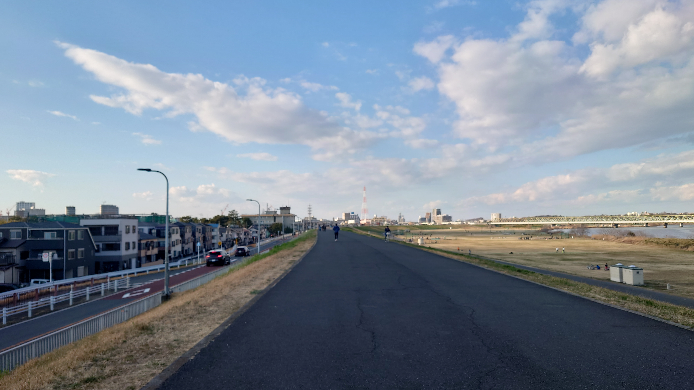

こんにちは、ザクザク食感です。
友達に誘われてクリケットをした。
↓絵に描いたような河川敷に行った。

あの、ベッドから一歩も出ない休日しか過ごしていなかったザクザク食感が、休日にスポーツ！？
ありえなすぎる 最近健康になりすぎ
これの本質は、僕が健康になったことより、一年以上連絡を返さなかった僕を元気になったらしいという噂だけで当然のように呼んでくれる友達にある。僕の周りにはいいやつが多すぎる。ありがとう……
僕の何が評価されているんだ！？と思うが、みんな僕が面白い人間だから呼んでくれるらしい。
昔の話をするターンになったときに、僕が教室でDaisukeを踊ったり、全てのカードの声マネをしながらシャドウバースをしたり、フォロワーには絶対見せられないようなとんでもない変顔をしている記録を見ながらみんなで笑っていた。
こんな活動をずっとやっているからすっかり忘れていたけど、僕ってお調子者だったんだ……と思い出した。
退廃的な人間に惹かれて、ザクザク食感というアカウントをつくって、希死念慮についていろいろ言っているうちに自分がなぜ苦しいのかに気づいて、どんどん精神が沈んでいって今の僕になった、という変遷をすっかり忘れていた。
だが、僕は自分が明るい人間だとは思っていない。
それでは、さようなら。